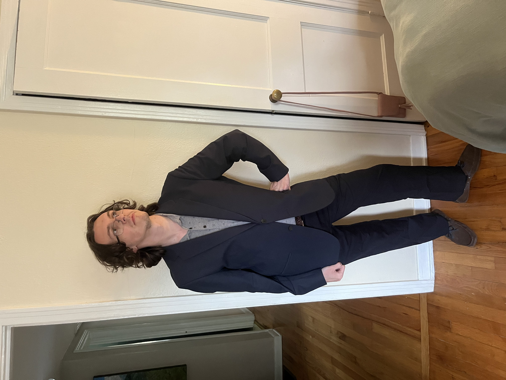

Daniel Fletcher
Software Engineer • Lifelong Learner • Aspiring Video Game Developer & Designer
About Me

My name is Daniel Fletcher, and I have lived in Tallahassee, FL for my entire life! I graduated from Leon High School in 2019, from which I promptly attended Florida State University where I attained a degree in computer science. In December 2022, I graduated from FSU with a Bachelor of Science degree.
{% assign sections = site.data.navigation %}
My Portfolio
My portfolio website is divided into six main sections:
-
About –
Learn about me, both personally and professionally. You can also find my primary contact information here, as well as this brief summary you're currently reading!
-
Activity –
A blog of sorts that also serves as a changelog for my portfolio. I plan to add posts here any time I update the site, whether that be adding new projects, implementing new features, or working in bug fixes.
-
Certifications –
Check out all of the certifications I have earned so far in my computer science journey, complete with links to the certifications themselves.
-
Profiles –
Interested in my online presence beyond my primary contact info? Look no further! All of my relevant online profiles are listed here, along with an indication as to whether I am currently active for each profile.
-
Projects –
Take a look at the myriad of projects I have worked on, ranging from academic submissions for Harvard to personal passion projects. This page contains a rotating selection of three featured projects and a comprehensive list of all my past projects.
-
Resources –
Look into some of the *incredible* resources that have helped me get to where I am now. All relevant links included.